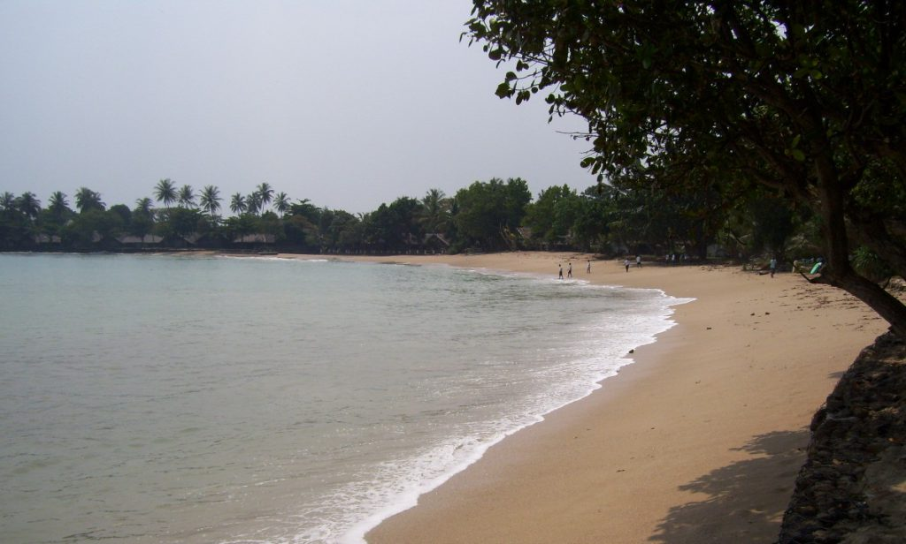
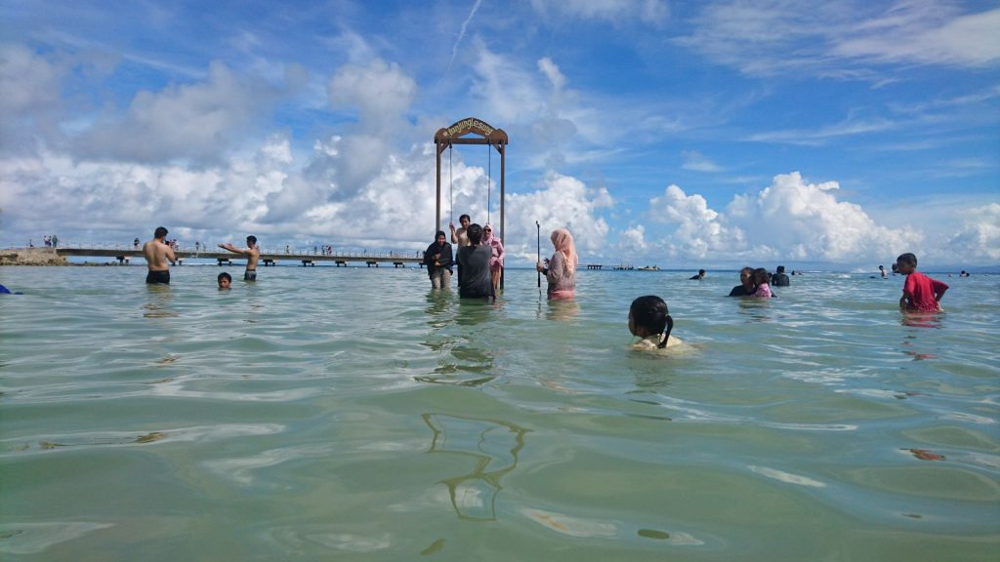
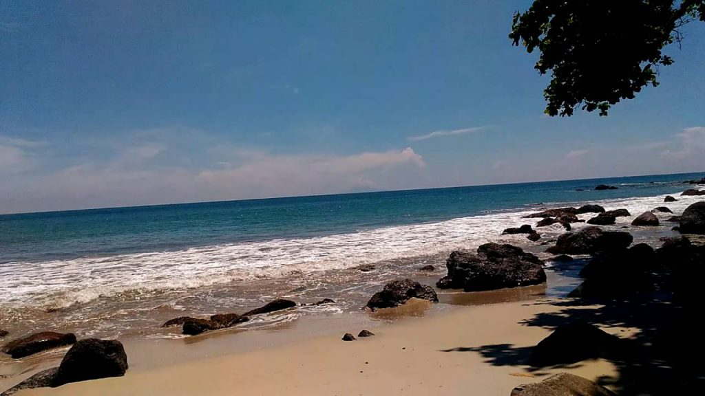
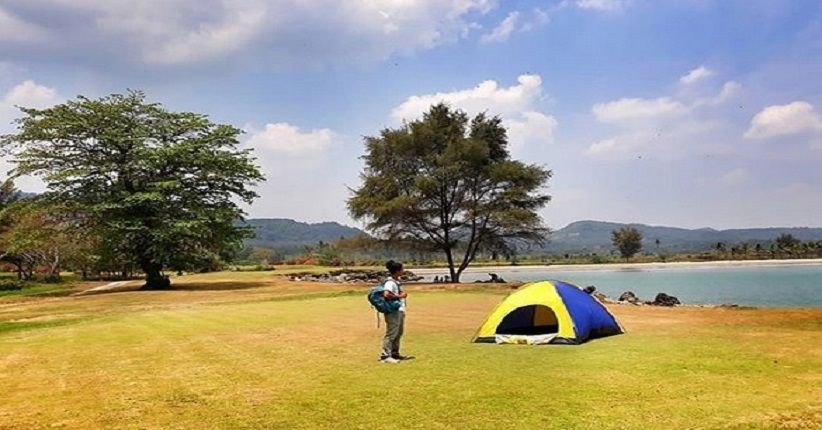
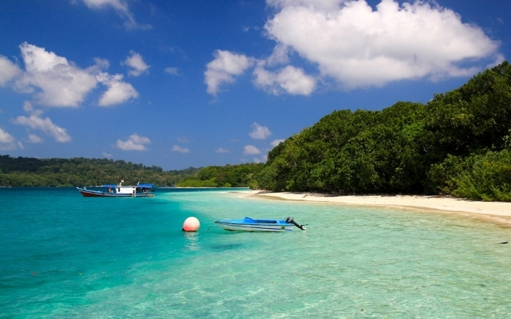
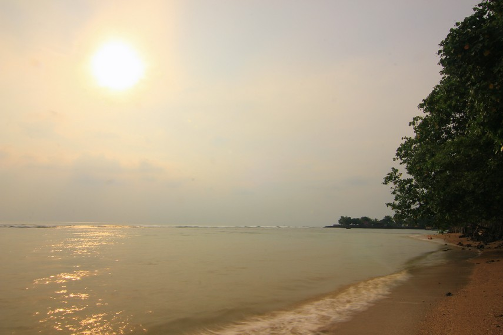
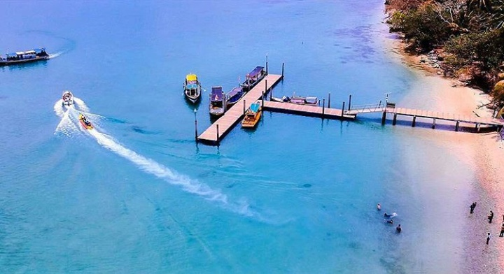
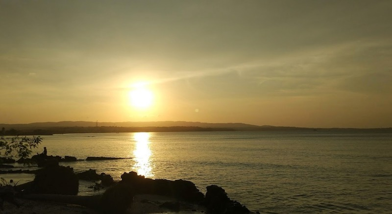

1. Pantai Carita

Pantai Carita merupakan salah satu pantai di Provinsi Banten yang ramai dikunjungi wisatawan karena memiliki pasir pantai berwarna putih. Lokasi pantai ini berada di Desa Sukarame, Kecamatan Carita, Kabupaten Pandeglang, Banten. Daya tarik yang tidak terbantahkan dari wisata pantai di sini ialah pesona hamparan pasir putihnya yang luar biasa. Selain bersih dan terawat, pasir-pasir tersebut seakan berubah menjadi butiran berlian jika terkena sorot matahari. Keindahan ini mampu menghipnotis setiap pengunjung yang datang. Panorama lain yang tak kalah menarik ialah pemandangan anak Gunung Krakatau yang nampak dari kejauhan. Berjemur di tepi pantai sambil menikmati setiap pesona yang ada akan menjadi sebuah pengalaman yang tak terlupakan. Pantai di Pandeglang ini memiliki ombak yang sangat tenang sehingga banyak wisatawan yang memanfaatkan kesempatan ini untuk bermain diving dan snorkeling. Biota laut seperti ikan-ikan kecil yang berwarna-warni diantara terumbu karang terlihat sangat lucu dan menggemaskan. Tersedia pula wahana banana boat dan motor ATV yang bisa dijadikan sarana untuk mengelilingi keindahan pantai di pesisir barat ini.
2. Pantai Tanjung Lesung

Keberadaan Pantai Tanjung Lesung disebut-sebut sebagai pantai terindah bak surga dunia yang letaknya tersembunyi. Lokasinya berada di daerah Tanjung Jaya, Kecamatan Panimbang, Kabupaten Pandeglang, Provinsi Banten. Titik lokasi pantai ini cukup jauh dari pusat Kota Banten yaitu sekitar 160 km. Banyak sekali daya tarik yang disuguhkan oleh pantai di Banten yang sangat terkenal dengan keindahannya ini. Salah satu yang paling dinanti ialah pemandangan sunset di balik anak Gunung Karakatau yang berada di tengah laut. Momen ini dapat menghasilkan view foto pantai yang sangat menakjubkan. Selain itu, dermaga di Pantai Tanjung Lesung juga menjadi spot favorit bagi pengunjung yang hobi memancing. Sayangnya, Anda harus menyediakan alat pancing sendiri dari rumah karena belum tersedia penyewaan alat pancing di sini. Bagi para pecinta olahraga snorkeling, tempat ini sangat cocok untuk mengeksplorasi hobi tersebut. Terlebih lagi, Pantai Tanjung Lesung memang menjadi lokasi konservasi terumbu karang. Keindahan alam bawah laut begitu nampak di bawah permukaan air yang tenang. Siapkan baju pantai terbaik Anda untuk menjelajahinya. Wahana lainnya yang menjadi daya tarik wisata di sini diantaranya banana boat, jet sky, perahu kanoe, dan voli pantai.
3. Pantai Batu Hideung

Pantai Batu Hideung menjadi salah satu wisata di Pandeglang Banten yang cukup unik. Pasalnya, banyak terdapat bebatuan besar berwarna hitam di sepanjang tepi pantai. Lokasi dari pantai ini berada di daerah Tanjung Jaya, Mekarsari, Kecamatan Panimbang, Kabupaten Pandeglang, Provinsi Banten. Wisata pantai di pesisir barat Jawa ini memang terbilang masih perawan karena belum terjamah oleh banyaknya wisatawan yang datang. Namun, siapa sangka jika pemandangan di tempat ini sangat menarik hati. Anda akan disuguhkan dengan pengalaman berenang diantara bebatuan granit yang besar. Bebatuan khas batu kali air tawar tersebut seringkali menjadi spot menarik untuk beristirahat atau bersua foto. Gambar pantai akan terlihat begitu menarik dari sudut pandang manapun. Terdapat tips wisata di pantai Batu Hideung yang tak boleh dilewatkan. Misalnya, anjuran untuk membawa bekal makanan atau minuman sendiri dari rumah karena tidak ada kantin ataupun rumah makan di tempat wisata. Pantai ini sangat rekomended untuk yang membutuhkan ketenangan karena pantai ini sangat hening dari segala hiruk pikuk. Sampah pun jarang sekali ditemukan di tepi pantai. Hanya sesekali terlihat potongan-potongan kayu yang hanyut dan terseret ombak ke tepian. Pantai di Pandeglang menjadi wisata yang sangat cocok dijadikan sebagai alternatif untuk mengisi waktu liburan.
4. Pantai Bugel Mega Camara

Pantai Bugel mega camara mempunyai pesona layaknya pantai pada umumnya. Terapi ada suatu hal yang menjadi keunikan fenomena alam dari pantai ini. Pantai ini terletak di ds Banyuasih, Cigeulis, Pandeglang, Banten. Sayangnya keunikan dari pantai ini hanya dapat dilihat saat musim kemarau. Pada musim kemarau, akan menampilkan daratan pasir luas seperti padang savana. Warna pasir yang coklat keemasan membuat pesona pantai terlihat sangat mirip padang savana. Dengan hal ini tidak perlu pergi jauh di Jogja hanya untuk menik pesona dari padang savana ala tropis.
5. Pantai Pulau Panaitan

Pulau Panaitan teeletak di seberang Ujung Kulon, Pandeglang. Di pulau ini sangat terkenal dengan pantai pulau Panaitan. Bahkan pantai tersebut mempunyai ombak yang istimewa. Kondisi pasir di pantai mempunyai warna putih dengan air laut biru membuat suasana alam pantainya cukup sempurna. Kondisi ombak di pantai sangat besar dan garis pantai cukup panjang. Dengan kondisi tersebut membuat pantai ini dinobatkan sebagai tempat untuk surfing paling baik di dunia.
6. Pantai Matahari

Matahari beach menjadi sebuah pantai yang menyuguhkan pesona sunset dan sunrise sempurna yang disertai dengan pasir keemasan. Selain itu pantai ini juga menjadi tempat observasi terbaik untuk menyaksikan salah atau gunung purba tertua di Indonesia. Gunung itu adalah gunung Krakatau. Pesona gunung Krakatau juga akan dipercantik dengan adanya kabut tipis. Selain menjadi tempat observasi terbaik untuk gunung Krakatau, lokasi pantai juga sangat istimewa. Karena berada tepat di tepi jalan raya. Alamat lengkap dari pantai matahari berada di Jl Raya Anyer, Pandeglang.
7. Pantai Pulau Liwungan

Pantai Limungan lebih dikenal dengan nama pantai umang. Pantai Umang ini berada di salah satu pulau yang berada di seberang Ujung Kulon, yaitu pulau Liwungan. Pantai Pulau Liwungan mempunyai suasana yang masih sangat natural. Jadi kondisi pantai masih sangat bersih. Sayangnya di pantai Umang tidak recommended untuk berenang sebab ombak cukup besar. Namun pengunjung dapat melakukan aktivitas banana boat.
8. Pantai Ciheru

Pantai yang satu ini identik dengan pesona kepingan batu karang yang tersebar secara menyeluruh di sepanjang tepi pantai. Warna pasir dari pantai Ciheru identik dengan warna putih bersih dan sebagai tempat snorkeling favorit. Untuk lokasi pantai berada dekat dengan Citra Beach di daerah Mekarsari, Panimbang, Pandeglang.
Sumber Konten : https://piknikwisata.com/banten/pandeglang/pantai/terbaik/